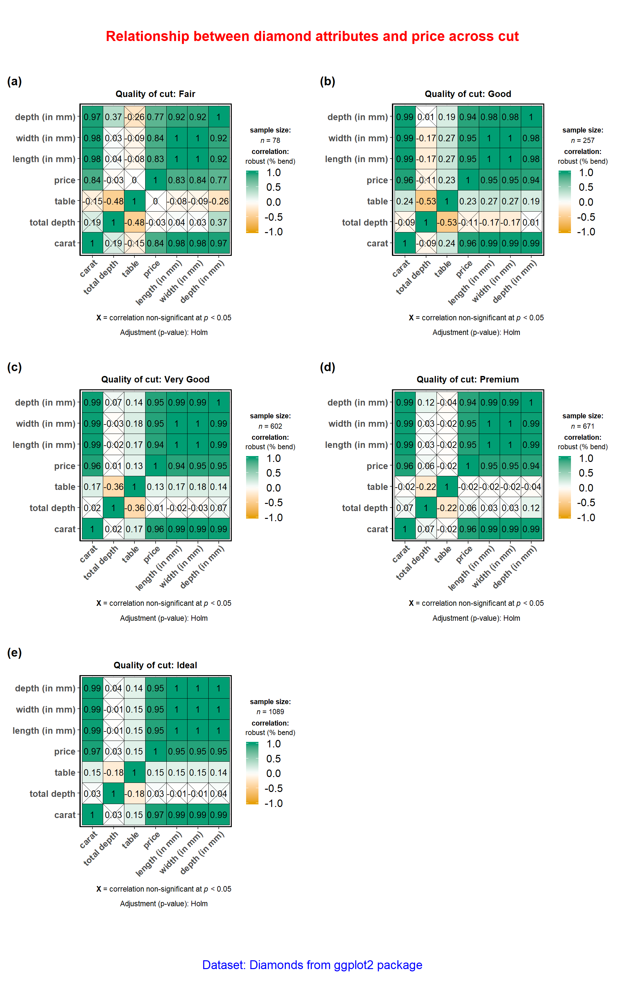

The function ggstatsplot::ggcorrmat provides a quick way to produce publication-ready correlation matrix (aka correlalogram) plot. The function can also be used for quick data exploration. In addition to the plot, it can also be used to get a correlation coefficient matrix or the associated p-value matrix. Currently, the plot can display Pearson’s r, Spearman’s rho, and Kendall’s tau, and robust correlation coefficient (percentage bend correlation; see ?WRS2::pbcor). This function is a convenient wrapper around ggcorrplot::ggcorrplot function with some additional functionality.
We will see examples of how to use this function in this vignette with the gapminder and diamonds dataset.
To begin with, here are some instances where you would want to use ggcorrmat-
- to easily visualize a correlation matrix using
ggplot2 - to quickly explore correlation between (all) numeric variables in the dataset
Note before: The following demo uses the pipe operator (%>%), so in case you are not familiar with this operator, here is a good explanation: http://r4ds.had.co.nz/pipes.html
Correlation matrix plot with ggcorrmat
For the first example, we will use the gapminder dataset (available in eponymous package on CRAN) provides values for life expectancy, Gross Domestic Product (GDP) per capita, and population, every five years, from 1952 to 2007, for each of 142 countries and was collected by the Gapminder Foundation. Let’s have a look at the data-
library(gapminder)
library(dplyr)
dplyr::glimpse(x = gapminder)
#> Observations: 1,704
#> Variables: 6
#> $ country <fct> Afghanistan, Afghanistan, Afghanistan, Afghanistan, Afgha...
#> $ continent <fct> Asia, Asia, Asia, Asia, Asia, Asia, Asia, Asia, Asia, Asi...
#> $ year <int> 1952, 1957, 1962, 1967, 1972, 1977, 1982, 1987, 1992, 199...
#> $ lifeExp <dbl> 28.801, 30.332, 31.997, 34.020, 36.088, 38.438, 39.854, 4...
#> $ pop <int> 8425333, 9240934, 10267083, 11537966, 13079460, 14880372,...
#> $ gdpPercap <dbl> 779.4453, 820.8530, 853.1007, 836.1971, 739.9811, 786.113...Let’s say we are interested in studying correlation between population of a country, average life expectancy, and GDP per capita across countries only for the year 2007.
The simplest way to get a correlation matrix is to stick to the defaults-
library(ggstatsplot)
# select data only from the year 2007
gapminder_2007 <- dplyr::filter(.data = gapminder::gapminder, year == 2007)
# producing the correlation matrix
ggstatsplot::ggcorrmat(
data = gapminder_2007, # data from which variable is to be taken
cor.vars = lifeExp:gdpPercap # specifying correlation matrix variables
)
This plot can be further modified with additional arguments-
ggstatsplot::ggcorrmat(
data = gapminder_2007, # data from which variable is to be taken
cor.vars = lifeExp:gdpPercap, # specifying correlation matrix variables
cor.vars.names = c(
"Life Expectancy",
"population",
"GDP (per capita)"
),
type = "spearman", # which correlation coefficient is to be computed
lab.col = "red", # label color
ggtheme = ggplot2::theme_light(), # selected ggplot2 theme
ggstatsplot.layer = FALSE, # turn off default ggestatsplot theme overlay
matrix.type = "lower", # correlation matrix structure
colors = NULL, # turning off manual specification of colors
palette = "category10_d3", # choosing a color palette
package = "ggsci", # package to which color palette belongs
title = "Gapminder correlation matrix", # custom title
subtitle = "Source: Gapminder Foundation" # custom subtitle
)
As seen from this correlation matrix, although there is no relationship between population and life expectancy worldwide, at least in 2007, there is a strong positive relationship between GDP, a well-established indicator of a country’s economic performance.
Given that there were only three variables, this doesn’t look that impressive. So let’s work with another example from ggplot2 package: the diamonds dataset. This dataset contains the prices and other attributes of almost 54,000 diamonds.
Let’s have a look at the data-
library(ggplot2)
dplyr::glimpse(ggplot2::diamonds)
#> Observations: 53,940
#> Variables: 10
#> $ carat <dbl> 0.23, 0.21, 0.23, 0.29, 0.31, 0.24, 0.24, 0.26, 0.22, 0.23,...
#> $ cut <ord> Ideal, Premium, Good, Premium, Good, Very Good, Very Good, ...
#> $ color <ord> E, E, E, I, J, J, I, H, E, H, J, J, F, J, E, E, I, J, J, J,...
#> $ clarity <ord> SI2, SI1, VS1, VS2, SI2, VVS2, VVS1, SI1, VS2, VS1, SI1, VS...
#> $ depth <dbl> 61.5, 59.8, 56.9, 62.4, 63.3, 62.8, 62.3, 61.9, 65.1, 59.4,...
#> $ table <dbl> 55, 61, 65, 58, 58, 57, 57, 55, 61, 61, 55, 56, 61, 54, 62,...
#> $ price <int> 326, 326, 327, 334, 335, 336, 336, 337, 337, 338, 339, 340,...
#> $ x <dbl> 3.95, 3.89, 4.05, 4.20, 4.34, 3.94, 3.95, 4.07, 3.87, 4.00,...
#> $ y <dbl> 3.98, 3.84, 4.07, 4.23, 4.35, 3.96, 3.98, 4.11, 3.78, 4.05,...
#> $ z <dbl> 2.43, 2.31, 2.31, 2.63, 2.75, 2.48, 2.47, 2.53, 2.49, 2.39,...Let’s see the correlation matrix between different attributes of the diamond and the price.
# for reproducibility
set.seed(123)
# let's use just 5% of the data to speed it up
ggstatsplot::ggcorrmat(
data = dplyr::sample_frac(tbl = ggplot2::diamonds, size = 0.05),
cor.vars = c(carat, depth:z), # note how the variables are getting selected
cor.vars.names = c(
"carat",
"total depth",
"table",
"price",
"length (in mm)",
"width (in mm)",
"depth (in mm)"
),
hc.order = TRUE # use hierarchical clustering
)
We can make a number of changes to this basic correlation matrix. For example, since we were interested in relationship between price and other attributes, let’s make the price column to the the first column. Additionally, since we are running 6 correlations that are of a priori interest to us, we can adjust our threshold of significance to (0.05/6 ~ 0.008). Additionally, let’s use a non-parametric correlation coefficient. Please note that it is important to always make sure that the order in which cor.vars and cor.vars.names are entered is in sync. Otherwise, wrong column labels will be displayed.
# for reproducibility
set.seed(123)
# let's use just 5% of the data to speed it up
ggstatsplot::ggcorrmat(
data = dplyr::sample_frac(tbl = ggplot2::diamonds, size = 0.05),
cor.vars = c(price, carat, depth:table, x:z), # note how the variables are getting selected
cor.vars.names = c(
"price",
"carat",
"total depth",
"table",
"length (in mm)",
"width (in mm)",
"depth (in mm)"
),
type = "spearman",
sig.level = 0.008,
matrix.type = "lower",
title = "Relationship between diamond attributes and price",
subtitle = "Dataset: Diamonds from ggplot2 package",
colors = c("#0072B2", "#D55E00", "#CC79A7"),
pch = 7,
# additional aesthetic arguments passed to `ggcorrmat`
ggcorrplot.args = list(
lab_col = "yellow",
lab_size = 6,
tl.srt = 90, # vertical labels for the x-axis (useful in case of long variable names)
pch.col = "white",
pch.cex = 14
),
caption =
substitute(
paste(italic("Note"), ": Point shape denotes correlation non-significant at p < 0.008; adjusted for 6 comparisons")
)
) + # modification outside ggstatsplot using ggplot functions
ggplot2::theme(
axis.text.x = ggplot2::element_text(
margin = ggplot2::margin(t = 0.15, r = 0.15, b = 0.15, l = 0.15, unit = "cm")
)
)
As seen here, and unsurprisingly, the strongest predictor of the diamond price is its carat value, which a unit of mass equal to 200 mg. In other words, the heavier the diamond, the more expensive it is going to be.
Correlation statistics matrix with ggcorrmat
Another utility of ggcorrmat is in obtaining matrix of correlation coefficients and their p-values for a quick and dirty exploratory data analysis. For example, for the correlation matrix we just ran, we can get a coefficient matrix and a p-value matrix.
# for reproducibility
set.seed(123)
# to get correlations
ggstatsplot::ggcorrmat(
data = dplyr::sample_frac(tbl = ggplot2::txhousing, size = 0.15),
cor.vars = sales:inventory,
return = "correlations",
type = "robust",
digits = 3
)
# to get p-values
ggstatsplot::ggcorrmat(
data = dplyr::sample_frac(tbl = ggplot2::txhousing, size = 0.15),
cor.vars = c(volume, listings:inventory),
return = "p-values",
type = "nonparametric",
digits = 3
)
Note that if cor.vars are not specified, all numeric variables will be used. Moreover, you can also use abbreviations to specify what output you want in return.
# for reproducibility
set.seed(123)
# show four digits in a tibble
options(pillar.sigfig = 4)
# getting the correlation coefficient matrix
ggstatsplot::ggcorrmat(
data = iris, # all numeric variables from data will be used
type = "np", # non-parametric
return = "corr" # correlations
)
# getting the p-value matrix
ggstatsplot::ggcorrmat(
data = ggplot2::msleep,
cor.vars = sleep_total:bodywt,
type = "r", # robust
return = "p", # p-values
p.adjust.method = "holm"
)
# getting the confidence intervals for correlations
ggstatsplot::ggcorrmat(
data = ggplot2::msleep,
cor.vars = sleep_total:bodywt,
type = "p", # parametric
return = "ci", # confidence intervals
p.adjust.method = "holm"
)
#> Note: In the correlation matrix,
#> the upper triangle: p-values adjusted for multiple comparisons
#> the lower triangle: unadjusted p-values.
# getting the sample sizes for all pairs
ggstatsplot::ggcorrmat(
data = ggplot2::msleep,
cor.vars = sleep_total:bodywt,
type = "robust",
return = "n" # note that n is different due to NAs
)
Grouped analysis with grouped_ggcorrmat
What if we want to do the same analysis separately for each quality of the diamond cut (Fair, Good, Very Good, Premium, Ideal)?
ggstatsplot provides a special helper function for such instances: grouped_ggcorrmat. This is merely a wrapper function around ggstatsplot::combine_plots. It applies ggcorrmat across all levels of a specified grouping variable and then combines list of individual plots into a single plot. Note that the grouping variable can be anything: conditions in a given study, groups in a study sample, different studies, etc.
# for reproducibility
set.seed(123)
# let's use just 5% of the data to speed it up
ggstatsplot::grouped_ggcorrmat(
# arguments relevant for ggstatsplot::ggcorrmat
data = dplyr::sample_frac(tbl = ggplot2::diamonds, size = 0.05),
type = "robust", # percentage bend correlation coefficient
beta = 0.2, # bending constant
p.adjust.method = "holm", # method to adjust p-values for multiple comparisons
grouping.var = cut,
title.prefix = "Quality of cut",
cor.vars = c(carat, depth:z),
cor.vars.names = c(
"carat",
"total depth",
"table",
"price",
"length (in mm)",
"width (in mm)",
"depth (in mm)"
),
lab.size = 3.5,
# arguments relevant for ggstatsplot::combine_plots
title.text = "Relationship between diamond attributes and price across cut",
title.args = list(size = 16, color = "red"),
caption.text = "Dataset: Diamonds from ggplot2 package",
caption.args = list(size = 14, color = "blue"),
plotgrid.args = list(
labels = c("(a)", "(b)", "(c)", "(d)", "(e)"),
nrow = 3,
ncol = 2
)
)
Note that this function also makes it easy to run the same correlation matrix across different levels of a factor/grouping variable. For example, if we wanted to get the same correlation coefficient matrix for color of the diamond, we can do the following-
# for reproducibility
set.seed(123)
# let's obtain correlation coefficients with their CIs
ggstatsplot::grouped_ggcorrmat(
data = ggplot2::msleep,
grouping.var = vore,
return = "ci"
)
As this example illustrates, there is a minimal coding overhead to explore correlations in your dataset with the grouped_ggcorrmat function.
Grouped analysis with ggcorrmat + purrr
Although grouped_ function is good for quickly exploring the data, it reduces the flexibility with which this function can be used. This is the because the common parameters used are applied to plots corresponding to all levels of the grouping variable and there is no way to customize the arguments for different levels of the grouping variable. We will see how this can be done using the purrr package.
See the associated vignette here: https://indrajeetpatil.github.io/ggstatsplot/articles/web_only/purrr_examples.html
Summary of tests
Following tests are carried out for each type of analyses-
| Type | Test |
|---|---|
| Parametric | Pearson’s correlation coefficient |
| Non-parametric | Spearman’s rank correlation coefficient |
| Robust | Percentage bend correlation coefficient |
| Bayes Factor | Pearson’s correlation coefficient |
Suggestions
If you find any bugs or have any suggestions/remarks, please file an issue on GitHub: https://github.com/IndrajeetPatil/ggstatsplot/issues
Session Information
For details, see- https://indrajeetpatil.github.io/ggstatsplot/articles/web_only/session_info.html